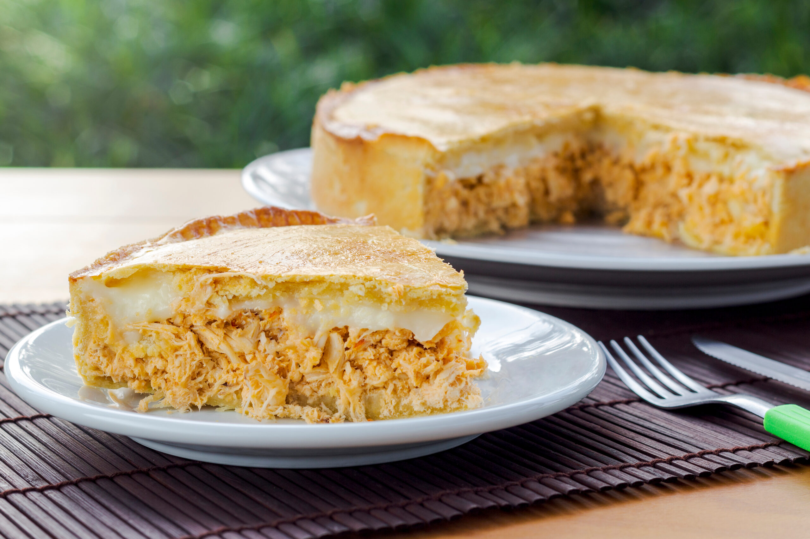

receita de empadão
Ingredientes
Recheio
1 a 2 peitos de frango cozidos, desfiados e temperados com tomate, cebola, coentro, colorau, sal e ouenpadão.jpgtros temperos a gosto
1 a 2 colheres de sopa de amido de milho diluído em água para engrossar o recheio Massa
1 quilo de farinha de trigo
1 ovo
500 gramas de manteiga
1 gema levemente batida com garfo para pincelar
Modo de preparo
Recheio
Disponha o peito de frango cozido, desfiado e temperado com tomate, cebola, coentro, colorau, sal e outros temperos a gosto com um recipiente grande.
Acrescente o amido de milho diluído em água e mexa até engrossar.
Reserve e deixe esfriar um pouco.
Massa
Misture todos os ingredientes até obter uma massa homogênea.
Modo de Preparo
Montagem do empadão da Filó de Pantanal
Distribua metade da massa em uma assadeira de 30 centímetros por 5 centímetros de altura.
Coloque o recheio de frango e cubra com o restante da massa.
Pincele com 1 gema levemente batida com garfo.
Leve ao forno para assar no forno preaquecido a 180 graus Célsius por 35 a 40 minutos.
